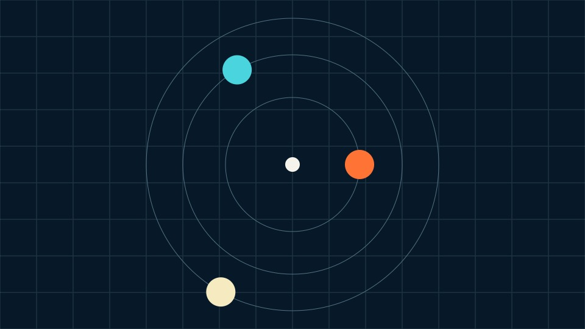

Presentation
Put one clear idea here.
A minimal, editable starting point with no build step or network dependencies.
Presentation
A minimal, editable starting point with no build step or network dependencies.
Replace this line with the first piece of evidence.
Use a second line only when it strengthens the point.
End with the decision or action the audience should take.
Local media, ready for the stage, presenter view and print.

End
name@example.com